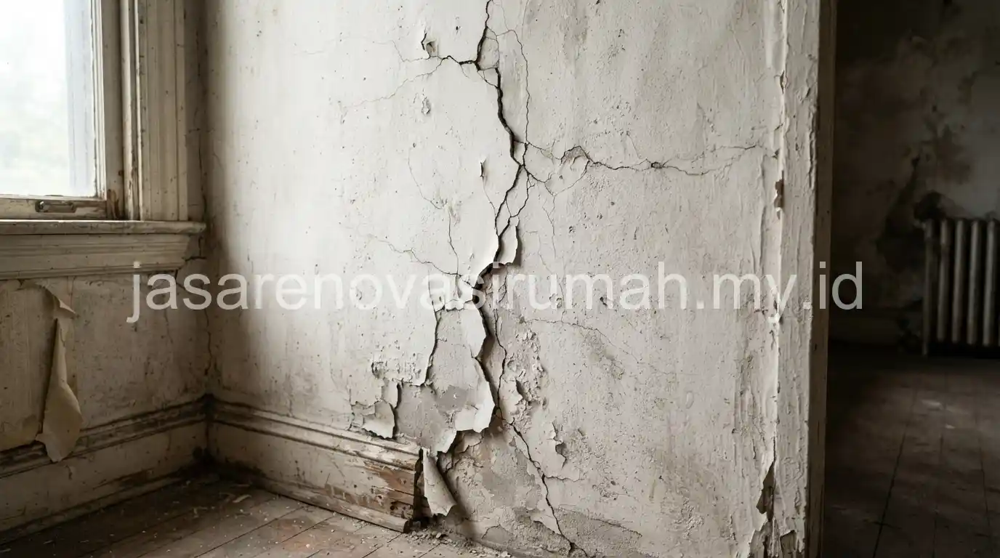

Renovasi rumah sebagian murah untuk atap bocor dan dinding retak umumnya berfokus pada perbaikan sumber masalah.
Misalnya seperti mengganti waterproofing atau menutup retak struktural, tanpa perlu membongkar seluruh bagian rumah.
Dengan menargetkan area yang benar-benar bermasalah, biaya renovasi bisa ditekan secara signifikan dibanding renovasi total.
Asalkan perbaikan dilakukan sesuai akar penyebabnya agar tidak muncul kembali dalam waktu dekat.
Apa Penyebab Paling Umum Atap Bocor dan Cara Mengatasinya?
Penyebab paling umum atap bocor adalah kerusakan pada lapisan waterproofing atau genteng yang bergeser.
Selain itu, talang air yang tersumbat juga bisa menyebabkan air merembes ke dalam plafon.
Berikut cara mengatasi kebocoran atap sesuai penyebabnya:
- Waterproofing rusak: aplikasikan ulang lapisan waterproofing pada area dak beton yang mengalami retak rambut.
- Genteng bergeser: perbaiki posisi genteng dan pastikan overlap antar genteng sudah sesuai standar kemiringan atap.
- Talang tersumbat: bersihkan talang secara berkala dan pastikan kemiringan talang cukup untuk mengalirkan air ke pembuangan.
- Nat atau sambungan retak: tutup ulang menggunakan sealant khusus yang tahan terhadap perubahan cuaca.
Perbaikan atap sebaiknya dilakukan sesegera mungkin setelah tanda kebocoran pertama muncul.
Air yang merembes dalam waktu lama bisa merusak plafon dan struktur kayu di sekitarnya.
Pada akhirnya, hal ini justru akan menambah biaya perbaikan.
Baca Juga: Estimasi RAB Renovasi Rumah Aman
Bagaimana Cara Memperbaiki Dinding Retak agar Tidak Muncul Kembali?
Cara memperbaiki dinding retak tergantung jenis retaknya.
Retak rambut umumnya cukup ditutup dengan plamir dan cat ulang.
Sementara retak struktural memerlukan penanganan lebih serius pada bagian dinding atau kolom terkait.
Langkah umum memperbaiki dinding retak:
- Identifikasi jenis retak, apakah hanya retak rambut pada permukaan atau retak yang menembus struktur dinding.
- Untuk retak rambut, bersihkan area retak lalu aplikasikan plamir dan cat ulang sesuai warna dinding.
- Untuk retak struktural yang lebih dalam, konsultasikan dengan tukang atau kontraktor berpengalaman sebelum menutupnya, karena bisa jadi indikasi masalah pada pondasi atau kolom.
- Pantau area yang sudah diperbaiki selama beberapa minggu untuk memastikan retak tidak muncul kembali.
Jika retak yang ditemukan cukup luas atau berulang di beberapa titik, sebaiknya jangan hanya ditambal sendiri.
Periksakan ke jasa renovasi rumah yang dapat menilai apakah masalahnya bersifat kosmetik atau berkaitan dengan struktur bangunan.

Berapa Kisaran Biaya untuk Renovasi Sebagian Skala Kecil?
Biaya renovasi sebagian untuk perbaikan atap bocor atau dinding retak umumnya jauh lebih rendah dibanding renovasi total.
Hal ini karena perbaikan hanya menyasar area yang bermasalah tanpa perlu membongkar seluruh bagian rumah.
Estimasi biaya tetap perlu disusun secara tertulis meski skalanya kecil, agar tidak ada biaya tersembunyi yang muncul di tengah pengerjaan.
Panduan estimasi RAB renovasi rumah tetap relevan diterapkan meski dalam skala kecil.
Terutama untuk memastikan komponen biaya bongkar, material, dan upah tukang sudah tercakup semua sebelum pekerjaan dimulai.
Kesalahan Umum Saat Melakukan Renovasi Sebagian dengan Dana Terbatas
Kesalahan yang paling sering terjadi adalah hanya menutup gejala kebocoran atau retak tanpa mengatasi penyebab utamanya.
Akibatnya, masalah yang sama muncul kembali dalam beberapa bulan ke depan.
Kesalahan lain yang perlu dihindari:
- Menggunakan material tambal sulam berkualitas rendah demi menekan biaya di awal.
- Tidak memeriksa kondisi struktur di sekitar area yang bocor atau retak sebelum menutupnya.
- Mengerjakan sendiri tanpa keahlian khusus pada area yang berkaitan dengan struktur bangunan.
Pada akhirnya, renovasi rumah sebagian yang murah bukan berarti asal tambal, melainkan perbaikan yang tepat sasaran sesuai akar penyebab masalah.
Jika Anda ragu menangani sendiri, tim jasa renovasi sebagian kami siap membantu.
Kami akan melakukan pengecekan dan perbaikan sesuai kondisi rumah Anda dengan anggaran yang terkontrol.